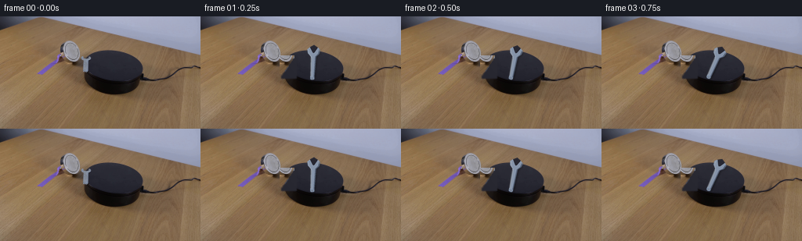
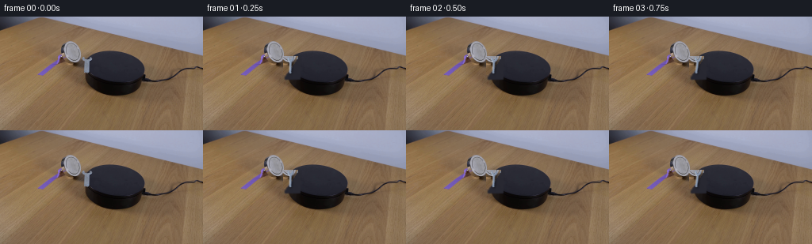
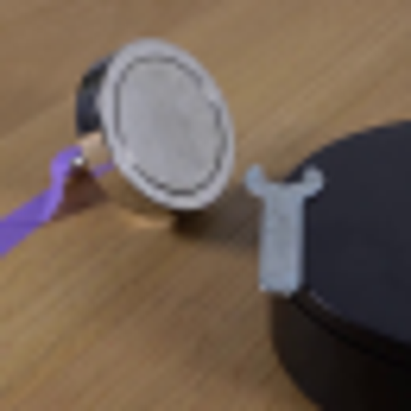
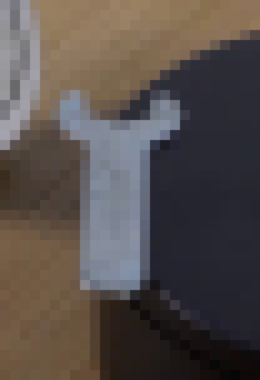
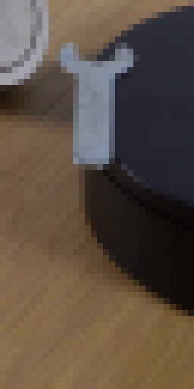
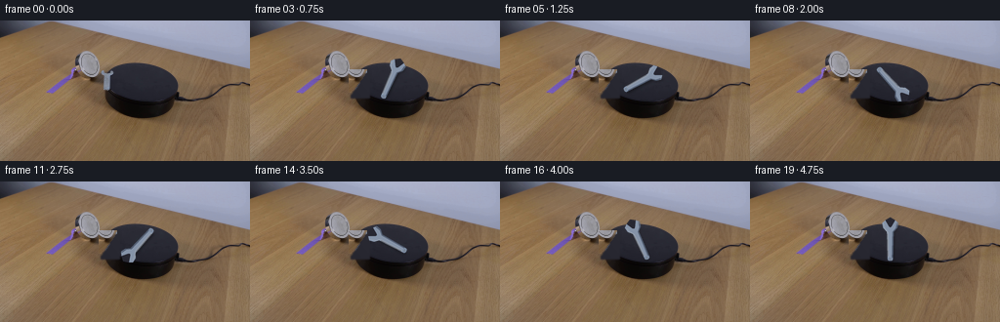
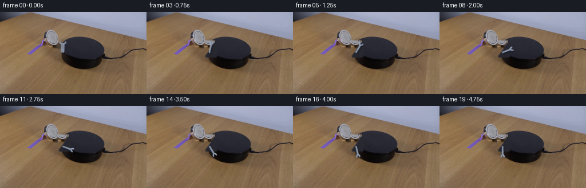
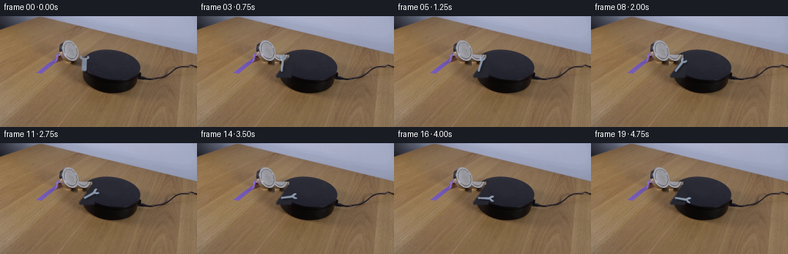

CODING AGENTS AS PIXEL WORLD MODELS
traex/GPT-5.6-Sol · 0102
点击播放 · 原生 RGB 像素
逐轮保存的候选
回放视频、检查图与代码变化。
每份候选均可单独播放。实际图片检查记录在下方工具轨迹中。
候选 01播放与检查图
点击播放 · 原生 RGB 像素

展开代码变化
--- 上一保存版本
+++ 本次保存版本
@@ -0,0 +1,111 @@
+from pathlib import Path
+import numpy as np
+from PIL import Image, ImageDraw, ImageFilter
+import cv2
+import artifact_io
+
+ROOT = Path(__file__).resolve().parent
+W,H = 256,144
+
+
+def polygon_mask(size, points, blur=0):
+ m=Image.new('L',size,0); ImageDraw.Draw(m).polygon(points,fill=255)
+ return m.filter(ImageFilter.GaussianBlur(blur)) if blur else m
+
+
+def ellipse_mask(size, box, blur=0):
+ m=Image.new('L',size,0); ImageDraw.Draw(m).ellipse(box,fill=255)
+ return m.filter(ImageFilter.GaussianBlur(blur)) if blur else m
+
+
+def build_clean_plate(src):
+ """Remove the starting wrench using nearby top/platform texture."""
+ clean=src.copy()
+ # Table portion: samples just to the left follow the same local perspective/lighting.
+ a=np.asarray(src); out=np.asarray(clean).copy()
+ ys,xs=np.mgrid[0:H,0:W]
+ table=((xs>=101)&(xs<=119)&(ys>=50)&(ys<=73))
+ # Protect platform: only copy into pixels on the table side of its diagonal rim.
+ table &= xs < (157.5 - .72*ys)
+ sx=np.clip(xs-15,0,W-1)
+ out[table]=a[ys[table],sx[table]]
+ clean=Image.fromarray(out)
+ # Platform portion: dark, subtly textured fill sampled from neighboring top.
+ pm=np.zeros((H,W),np.uint8)
+ for y in range(51,80):
+ for x in range(103,123):
+ if x >= 157.5-.72*y: pm[y,x]=255
+ pm=cv2.GaussianBlur(pm,(5,5),.75)
+ base=np.asarray(clean).astype(np.float32)
+ # use platform's local charcoal with tiny gradient rather than a flat cutout
+ yy,xx=np.mgrid[0:H,0:W]
+ col=np.zeros_like(base)
+ val=39 + .10*(xx-112) - .08*(yy-62)
+ col[...,0]=val+1; col[...,1]=val+1; col[...,2]=val+10
+ alpha=(pm.astype(np.float32)/255)[...,None]
+ base=base*(1-alpha)+col*alpha
+ return Image.fromarray(np.uint8(np.clip(base,0,255)))
+
+
+def wrench_layer(angle_deg, cx=143.5, cy=62.5):
+ """Small steel open-ended wrench rotating flat on the platform."""
+ S=4
+ layer=Image.new('RGBA',(W*S,H*S),(0,0,0,0))
+ d=ImageDraw.Draw(layer,'RGBA')
+ def P(x,y): return (int(round(x*S)),int(round(y*S)))
+ def poly(points,fill): d.polygon([P(x,y) for x,y in points],fill=fill)
+ # long axis points from center toward head; rotation is clockwise in image coordinates
+ th=np.deg2rad(angle_deg)
+ u=np.array([np.cos(th),np.sin(th)])
+ v=np.array([-np.sin(th),np.cos(th)])
+ C=np.array([cx,cy])
+ def q(long,side):
+ z=C+u*long+v*side; return (z[0],z[1])
+ # soft contact shadow, displaced down-right
+ shadow=Image.new('RGBA',layer.size,(0,0,0,0)); sd=ImageDraw.Draw(shadow,'RGBA')
+ sp=[q(-17,-2.5),q(13,-3.2),q(18,-7.0),q(22,-7.0),q(18,0),q(22,7),q(17,7),q(13,3.2),q(-17,2.5)]
+ sd.polygon([P(x+1.0,y+1.8) for x,y in sp],fill=(0,0,0,105))
+ shadow=shadow.filter(ImageFilter.GaussianBlur(1.25*S)); layer=Image.alpha_composite(layer,shadow); d=ImageDraw.Draw(layer,'RGBA')
+ # handle body and open crescent head silhouette
+ body=[q(-17,-2.7),q(11,-3.4),q(15,-7.2),q(20,-8.2),q(23,-5.0),q(17,-.7),q(23,5.0),q(20,8.2),q(15,7.2),q(11,3.4),q(-17,2.7)]
+ poly(body,(133,147,168,255))
+ # darker steel lower edge gives thickness
+ edge=[q(-17,1.5),q(11,2.2),q(15,5.7),q(20,6.7),q(21,8),q(15,7.2),q(11,3.4),q(-17,2.7)]
+ poly(edge,(101,116,140,180))
+ # cut the open jaw notch: a V/U shaped bite in end, transparent by mask below
+ # Paint realistic dark platform color into notch (object is entirely over platform).
+ notch=[q(23,-5.0),q(16.5,-1.25),q(15.6,0),q(16.5,1.25),q(23,5.0),q(26,0)]
+ poly(notch,(39,39,49,255))
+ # bevel highlight on shaft and jaw shoulders
+ d.line([P(*q(-15,-1.5)),P(*q(10,-2.0)),P(*q(14,-5.3)),P(*q(19,-6.5))],fill=(184,197,213,190),width=1*S)
+ d.line([P(*q(-14,-2.4)),P(*q(9,-3.0))],fill=(206,216,227,100),width=1*S)
+ # rounded butt end (small rotated cap)
+ cap=[q(-18.5,-1.7),q(-17.7,-2.55),q(-15.5,-2.45),q(-15.0,0),
+ q(-15.5,2.45),q(-17.7,2.55),q(-18.5,1.7),q(-18.8,0)]
+ poly(cap,(121,136,158,255))
+ d.line([P(*q(-17,-1.2)),P(*q(-17,1.2))],fill=(183,195,209,150),width=S)
+ return layer.resize((W,H),Image.Resampling.LANCZOS)
+
+
+def make_frames():
+ src=Image.open(ROOT/'first_frame.png').convert('RGB')
+ clean=build_clean_plate(src)
+ frames=[np.asarray(src).copy()]
+ # First provided frame has the wrench nearly vertical with its open jaw toward the magnet.
+ # One clockwise revolution over the locked 5 s demonstration, easing gently into motion.
+ for i in range(1,20):
+ t=i/19.0
+ phase=360.0*(t*t*(3-2*t))
+ ang=-90.0+phase
+ fr=clean.convert('RGBA')
+ fr=Image.alpha_composite(fr,wrench_layer(ang))
+ # retain constant-camera RGB frame
+ frames.append(np.asarray(fr.convert('RGB'),dtype=np.uint8))
+ return np.stack(frames).astype(np.uint8)
+
+if __name__=='__main__':
+ frames=make_frames()
+ assert frames.shape==(20,144,256,3) and frames.dtype==np.uint8
+ # strict contract: exact supplied first frame
+ assert np.array_equal(frames[0],np.asarray(Image.open(ROOT/'first_frame.png').convert('RGB')))
+ artifact_io.save(frames,ROOT)
候选 02播放与检查图
点击播放 · 原生 RGB 像素


展开代码变化
--- 上一保存版本
+++ 本次保存版本
@@ -47,7 +47,7 @@
return Image.fromarray(np.uint8(np.clip(base,0,255)))
-def wrench_layer(angle_deg, cx=143.5, cy=62.5):
+def wrench_layer(angle_deg, cx=110.0, cy=63.0):
"""Small steel open-ended wrench rotating flat on the platform."""
S=4
layer=Image.new('RGBA',(W*S,H*S),(0,0,0,0))
@@ -59,8 +59,9 @@
u=np.array([np.cos(th),np.sin(th)])
v=np.array([-np.sin(th),np.cos(th)])
C=np.array([cx,cy])
+ scale=.65
def q(long,side):
- z=C+u*long+v*side; return (z[0],z[1])
+ z=C+u*(long*scale)+v*(side*scale); return (z[0],z[1])
# soft contact shadow, displaced down-right
shadow=Image.new('RGBA',layer.size,(0,0,0,0)); sd=ImageDraw.Draw(shadow,'RGBA')
sp=[q(-17,-2.5),q(13,-3.2),q(18,-7.0),q(22,-7.0),q(18,0),q(22,7),q(17,7),q(13,3.2),q(-17,2.5)]
@@ -75,7 +76,7 @@
# cut the open jaw notch: a V/U shaped bite in end, transparent by mask below
# Paint realistic dark platform color into notch (object is entirely over platform).
notch=[q(23,-5.0),q(16.5,-1.25),q(15.6,0),q(16.5,1.25),q(23,5.0),q(26,0)]
- poly(notch,(39,39,49,255))
+ poly(notch,(0,0,0,0))
# bevel highlight on shaft and jaw shoulders
d.line([P(*q(-15,-1.5)),P(*q(10,-2.0)),P(*q(14,-5.3)),P(*q(19,-6.5))],fill=(184,197,213,190),width=1*S)
d.line([P(*q(-14,-2.4)),P(*q(9,-3.0))],fill=(206,216,227,100),width=1*S)
@@ -92,10 +93,10 @@
clean=build_clean_plate(src)
frames=[np.asarray(src).copy()]
# First provided frame has the wrench nearly vertical with its open jaw toward the magnet.
- # One clockwise revolution over the locked 5 s demonstration, easing gently into motion.
+ # A clear half-turn over the locked 5 s demonstration, easing gently into motion.
for i in range(1,20):
t=i/19.0
- phase=360.0*(t*t*(3-2*t))
+ phase=180.0*(t*t*(3-2*t))
ang=-90.0+phase
fr=clean.convert('RGBA')
fr=Image.alpha_composite(fr,wrench_layer(ang))
候选 03播放与检查图
候选 04播放与检查图
点击播放 · 原生 RGB 像素

展开代码变化
--- 上一保存版本
+++ 本次保存版本
@@ -47,7 +47,7 @@
return Image.fromarray(np.uint8(np.clip(base,0,255)))
-def wrench_layer(angle_deg, cx=110.0, cy=63.0):
+def wrench_layer(angle_deg, pivot=(110.0,71.0)):
"""Small steel open-ended wrench rotating flat on the platform."""
S=4
layer=Image.new('RGBA',(W*S,H*S),(0,0,0,0))
@@ -58,8 +58,10 @@
th=np.deg2rad(angle_deg)
u=np.array([np.cos(th),np.sin(th)])
v=np.array([-np.sin(th),np.cos(th)])
- C=np.array([cx,cy])
- scale=.65
+ # Rotate about the rounded handle end that is visibly resting at the platform rim.
+ # This keeps continuity with frame 00 while the jaw sweeps clockwise onto the top.
+ scale=.50
+ C=np.array(pivot)+u*(17.0*scale)
def q(long,side):
z=C+u*(long*scale)+v*(side*scale); return (z[0],z[1])
# soft contact shadow, displaced down-right
候选 05播放与检查图
点击播放 · 原生 RGB 像素


展开代码变化
--- 上一保存版本
+++ 本次保存版本
@@ -95,10 +95,10 @@
clean=build_clean_plate(src)
frames=[np.asarray(src).copy()]
# First provided frame has the wrench nearly vertical with its open jaw toward the magnet.
- # A clear half-turn over the locked 5 s demonstration, easing gently into motion.
+ # A clear clockwise sweep over the locked 5 s demonstration, easing gently into motion.
for i in range(1,20):
t=i/19.0
- phase=180.0*(t*t*(3-2*t))
+ phase=100.0*(t*t*(3-2*t))
ang=-90.0+phase
fr=clean.convert('RGBA')
fr=Image.alpha_composite(fr,wrench_layer(ang))
可观测工具轨迹
实际执行的命令与返回图片。
命令 1exit 0
/bin/bash -lc "cat prompt.txt && printf '\\n---RULES---\\n' && cat GENERATION_RULES.md"
命令 2exit 0
/bin/bash -lc "find . -maxdepth 2 -type f -printf '%p\\n' | sort"
命令 3exit 0
/bin/bash -lc "python3 - <<'PY'
from PIL import Image
im=Image.open('first_frame.png')
print(im.size, im.mode)
PY
ffmpeg -version | head -n 2"命令 4exit 0
/bin/bash -lc "python3 - <<'PY'
from PIL import Image
im=Image.open('first_frame.png')
im.resize((1024,576)).save('.tmp/up.png')
im.crop((65,25,130,90)).resize((520,520)).save('.tmp/crop.png')
PY"命令 5exit 0
/bin/bash -lc "python3 - <<'PY'
try: import cv2; print('cv2',cv2.__version__)
except Exception as e: print(e)
try: import scipy; print('scipy',scipy.__version__)
except Exception as e: print(e)
try: import imageio; print('imageio',imageio.__version__)
except Exception as e: print(e)
PY
sed -n '1,240p' artifact_io.py"命令 6exit 0
/bin/bash -lc "python3 - <<'PY'
from PIL import Image
import numpy as np
im=np.array(Image.open('first_frame.png'))
# print RGB grid encoded brightness/chromatic category roi
for y in range(48,98,2):
print(f'{y:3}',end=' ')
for x in range(100,124):
r,g,b=map(int,im[y,x]);
if b-r>15 and b-g>4 and max(r,g,b)>80: c='W'
elif max(r,g,b)<70:c='K'
elif max(r,g,b)-min(r,g,b)<12 and max(r,g,b)>120:c='G'
elif r>g+10:c='B'
else:c='.'
print(c,end='')
print()
print('samples')
for xy in [(110,53),(107,57),(114,57),(105,61),(110,65),(116,64),(109,72),(110,80),(111,90),(103,74),(120,70)]:
x,y=xy;print(xy,im[y,x])
PY"命令 7exit 0
/bin/bash -lc "python3 - <<'PY'
from PIL import Image
im=Image.open('first_frame.png')
im.crop((98,42,124,80)).resize((520,760),Image.Resampling.NEAREST).save('.tmp/wrench_nearest.png')
PY"命令 8exit 0
/bin/bash -lc "python3 - <<'PY'
from PIL import Image
im=Image.open('first_frame.png')
im.crop((94,44,126,108)).resize((384,768),Image.Resampling.NEAREST).save('.tmp/wrench_full.png')
PY"命令 9exit 1
/bin/bash -lc "cat > generate.py <<'PY'
from pathlib import Path
import numpy as np
from PIL import Image, ImageDraw, ImageFilter
import cv2
import artifact_io
ROOT = Path(__file__).resolve().parent
W,H = 256,144
def polygon_mask(size, points, blur=0):
m=Image.new('L',size,0); ImageDraw.Draw(m).polygon(points,fill=255)
return m.filter(ImageFilter.GaussianBlur(blur)) if blur else m
def ellipse_mask(size, box, blur=0):
m=Image.new('L',size,0); ImageDraw.Draw(m).ellipse(box,fill=255)
return m.filter(ImageFilter.GaussianBlur(blur)) if blur else m
def build_clean_plate(src):
\"\"\"Remove the starting wrench using nearby top/platform texture.\"\"\"
clean=src.copy()
# Table portion: samples just to the left follow the same local perspective/lighting.
a=np.asarray(src); out=np.asarray(clean).copy()
ys,xs=np.mgrid[0:H,0:W]
table=((xs>=101)&(xs<=119)&(ys>=50)&(ys<=73))
# Protect platform: only copy into pixels on the table side of its diagonal rim.
table &= xs < (157.5 - .72*ys)
sx=np.clip(xs-15,0,W-1)
out[table]=a[ys[table],sx[table]]
clean=Image.fromarray(out)
# Platform portion: dark, subtly textured fill sampled from neighboring top.
pm=np.zeros((H,W),np.uint8)
for y in range(51,80):
for x in range(103,123):
if x >= 157.5-.72*y: pm[y,x]=255
pm=cv2.GaussianBlur(pm,(5,5),.75)
base=np.asarray(clean).astype(np.float32)
# use platform's local charcoal with tiny gradient rather than a flat cutout
yy,xx=np.mgrid[0:H,0:W]
col=np.zeros_like(base)
val=39 + .10*(xx-112) - .08*(yy-62)
col[...,0]=val+1; col[...,1]=val+1; col[...,2]=val+10
alpha=(pm.astype(np.float32)/255)[...,None]
base=base*(1-alpha)+col*alpha
return Image.fromarray(np.uint8(np.clip(base,0,255)))
def wrench_layer(angle_deg, cx=143.5, cy=62.5):
\"\"\"Small steel open-ended wrench rotating flat on the platform.\"\"\"
S=4
layer=Image.new('RGBA',(W*S,H*S),(0,0,0,0))
d=ImageDraw.Draw(layer,'RGBA')
def P(x,y): return (int(round(x*S)),int(round(y*S)))
def poly(points,fill): d.polygon([P(x,y) for x,y in points],fill=fill)
# long axis points from center toward head; rotation is clockwise in image coordinates
th=np.deg2rad(angle_deg)
u=np.array([np.cos(th),np.sin(th)])
v=np.array([-np.sin(th),np.cos(th)])
C=np.array([cx,cy])
def q(long,side):
z=C+u*long+v*side; return (z[0],z[1])
# soft contact shadow, displaced down-right
shadow=Image.new('RGBA',layer.size,(0,0,0,0)); sd=ImageDraw.Draw(shadow,'RGBA')
sp=[q(-17,-2.5),q(13,-3.2),q(18,-7.0),q(22,-7.0),q(18,0),q(22,7),q(17,7),q(13,3.2),q(-17,2.5)]
sd.polygon([P(x+1.0,y+1.8) for x,y in sp],fill=(0,0,0,105))
shadow=shadow.filter(ImageFilter.GaussianBlur(1.25*S)); layer=Image.alpha_composite(layer,shadow); d=ImageDraw.Draw(layer,'RGBA')
# handle body and open crescent head silhouette
body=[q(-17,-2.7),q(11,-3.4),q(15,-7.2),q(20,-8.2),q(23,-5.0),q(17,-.7),q(23,5.0),q(20,8.2),q(15,7.2),q(11,3.4),q(-17,2.7)]
poly(body,(133,147,168,255))
# darker steel lower edge gives thickness
edge=[q(-17,1.5),q(11,2.2),q(15,5.7),q(20,6.7),q(21,8),q(15,7.2),q(11,3.4),q(-17,2.7)]
poly(edge,(101,116,140,180))
# cut the open jaw notch: a V/U shaped bite in end, transparent by mask below
# Paint realistic dark platform color into notch (object is entirely over platform).
notch=[q(23,-5.0),q(16.5,-1.25),q(15.6,0),q(16.5,1.25),q(23,5.0),q(26,0)]
poly(notch,(39,39,49,255))
# bevel highlight on shaft and jaw shoulders
d.line([P(*q(-15,-1.5)),P(*q(10,-2.0)),P(*q(14,-5.3)),P(*q(19,-6.5))],fill=(184,197,213,190),width=1*S)
d.line([P(*q(-14,-2.4)),P(*q(9,-3.0))],fill=(206,216,227,100),width=1*S)
# rounded butt end
d.ellipse([P(*q(-19,-2.55)),P(*q(-15,2.55))],fill=(121,136,158,255))
d.line([P(*q(-17,-1.2)),P(*q(-17,1.2))],fill=(183,195,209,150),width=S)
return layer.resize((W,H),Image.Resampling.LANCZOS)
def make_frames():
src=Image.open(ROOT/'first_frame.png').convert('RGB')
clean=build_clean_plate(src)
frames=[np.asarray(src).copy()]
# First provided frame has the wrench nearly vertical with its open jaw toward the magnet.
# One clockwise revolution over the locked 5 s demonstration, easing gently into motion.
for i in range(1,20):
t=i/19.0
phase=360.0*(t*t*(3-2*t))
ang=-90.0+phase
fr=clean.convert('RGBA')
fr=Image.alpha_composite(fr,wrench_layer(ang))
# retain constant-camera RGB frame
frames.append(np.asarray(fr.convert('RGB'),dtype=np.uint8))
return np.stack(frames).astype(np.uint8)
if __name__=='__main__':
frames=make_frames()
assert frames.shape==(20,144,256,3) and frames.dtype==np.uint8
# strict contract: exact supplied first frame
assert np.array_equal(frames[0],np.asarray(Image.open(ROOT/'first_frame.png').convert('RGB')))
artifact_io.save(frames,ROOT)
PY
python3 generate.py
python3 - <<'PY'
import numpy as np
from PIL import Image
z=np.load('pixels.npz')['pixels']
print(z.shape,z.dtype)
print('frame0 exact',np.array_equal(np.array(Image.open('frames/00.png')),np.array(Image.open('first_frame.png'))))
PY"命令 10exit 0
/bin/bash -lc "python3 generate.py && python3 - <<'PY'
import numpy as np
from PIL import Image
z=np.load('pixels.npz')['pixels']
print(z.shape,z.dtype)
print('frame0 exact',np.array_equal(np.array(Image.open('frames/00.png')),np.array(Image.open('first_frame.png'))))
PY"命令 11exit 0
/bin/bash -lc 'python3 generate.py'
命令 12exit 0
/bin/bash -lc 'python3 generate.py'
命令 13exit 0
/bin/bash -lc "python3 generate.py && python3 - <<'PY'
from PIL import Image
import numpy as np
f=np.stack([np.array(Image.open(f'frames/{i:02d}.png')) for i in range(20)])
assert f.shape==(20,144,256,3) and f.dtype==np.uint8
assert np.array_equal(f[0],np.array(Image.open('first_frame.png')))
print('validated',f.shape,f.dtype,'changed pixels:',[int(np.any(f[i]"'!=f[i-1],axis=2).sum()) for i in range(1,20)])
PY'视觉工具实际返回图片 1

视觉工具实际返回图片 2

视觉工具实际返回图片 3

视觉工具实际返回图片 4

视觉工具实际返回图片 5

视觉工具实际返回图片 6

视觉工具实际返回图片 7

视觉工具实际返回图片 8

保存候选 5 份；完成命令 13 次；可验证图片返回 8 张。原始 API 响应与完整日志保留在本地。